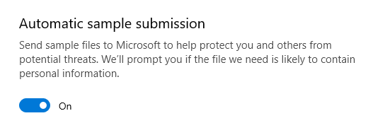
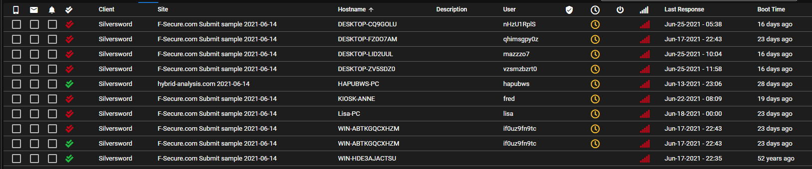
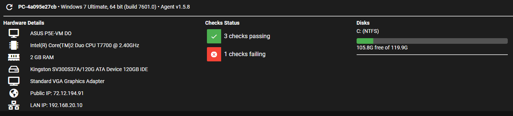
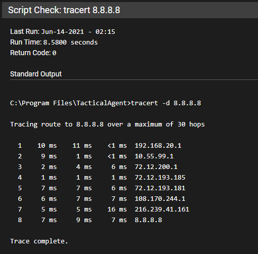

FAQ¶
How do I get Reporting?¶
Please see the Reporting FAQ
Help! I've been hacked and there are weird agents appearing in my Tactical RMM!¶
No, you haven't.
-
You used the Dynamic EXE/Deployment EXE installation method, and the installer was scanned by an antivirus.
-
It didn't recognize the exe.
-
You have the option enabled to submit unknown applications for analysis.

-
They ran it against their virtualization testing cluster.
To prevent this from happening: either turn off file uploads in your AV settings, or use the Powershell or Manual install methods.
Here are some examples of what that looks like.



Can I ____?¶
If you've been sent a link to this, we are not going to allow or support things like your request. The reason is because it would facilitate people avoiding to pay for/supporting Tactical RMM for these/similar premium paid features.
So the answer is No.
I'd like to be able to ____?¶
If you've been sent a link to this, it's possible that we could support this but it would most likely be a paid premium feature. Please contact Commercial Support to discuss further.
Why isn't the Code Signing free?¶
It is recommended because it helps the project mature, Tactical is source available and free. Community support is also free on top of this we have spent a lot of time developing the docs, please follow them! With many source available (and similar) projects devs get bored of them because they don't make money out of it. So here is your reasons to pay for code signing and also why it was discussed and implemented.
- Code signing costs a lot of money. OV code signing requires a legitimate legal business...Amidaware was setup for this purpose. Code signing + operating a business costs thousands of dollars a year.
- It helps the project move forward and it can support devs spending time on it, they have lives, wives, jobs and kids which all demands attention.
- It should stop bad actors using it maliciously.
- It helps with AVs detecting it as anything malicious.
We had github sponsors up for many months before code signing. Very few people donated, some $5 and $10. maybe $40 a month. Once we announced code signing, sponsors came in like crazy, and many people upgraded their $5 to $55 so whilst everyone believes people would gladly donate, that's just not the case. We already tried.
Is Tactical RMM Compliant with Privacy Laws?¶
Tactical, as a self-hosted solution, offers the potential for GDPR and HIPAA compliance as well as many other privacy laws, but its adherence largely depends on the hosting environment and how it's configured. Since you have full control over the hosting, you bear a significant responsibility for compliance. By default, the Tactical server collects essential information which is displayed in the dashboard on each agent. None of this data is transmitted outside of the Tactical server, enhancing data security. Encryption at rest is possible at the file system level, contingent on your hosting infrastructure. Additionally, all communications between the Tactical server and your clients are encrypted in transit, enhancing security. Furthermore, Tactical incorporates an audit log that records all actions, assisting in tracking and ensuring accountability. However, it's crucial to be cautious about collector scripts, as they could potentially alter data collection practices, potentially leading to non-compliance if not carefully managed and configured in accordance with GDPR and HIPAA regulations. Therefore, maintaining a vigilant approach to configuration and monitoring is essential when utilizing Tactical for compliance purposes.
Linux/macOS Agents¶
Why do I see?
Missing code signing token
400: Bad Request
You must have a paid code signing certificate while Linux/macOS support is in the post-alpha/beta:
- Code signing makes these installs easy and is a benefit offered to code signing sponsors. So become a sponsor and enjoy the easy life
- DIYer can read thru the code and... DIY.
This is primarily for 2 reasons:
- As this has been a sponsorship goal it seems only fair that those who contributed to make this a reality get early access to easy agent installs.
- We're looking for good bug reports from active users to get these agent into production ready code.
Who is Amidaware Inc?¶
The Legal entity behind Tactical RMM.
How do I move an agent to another client/site?¶
Right click on the agent > Edit agent. Then select the new site from the dropdown.
Is it possible to use XXX with Tactical RMM¶
While it may be possible to use XXX, we have not configured it and therefore it is Unsupported. We cannot help you configure XXX as it pertains to your environment.
Is it possible to use XXX proxy server with Tactical RMM¶
If you wish to stray from the easy install of a standard install in a VPS, you need to have the knowledge on how to troubleshoot your own custom environment.
The most common reasons you're running a proxy are:
- Because you only have a single public IP and you already have something on Port 443. Workaround: Get another public IP from your ISP.
- Because you want to monitor traffic for security reasons: You're a Networking Wizard.
There are some implementations that others have done, but be aware it is Unsupported and if you're requesting help in Discord please let us know in advance.
I want to use a different port other than 443¶
I want to use a different port for Tactical RMM because my public IP on 443 is currently being used by something else. PAT (aka Port Address Translation)
That is not possible at this time.
Your options are:
- Run in a VPS
- Get another Public IP from your ISP
- Use another proxy server in an unsupported configuration
- Run TRMM in a SDWAN like Netmaker/Zerotier/Tailscale/Sunbird etc
How do I do X feature in the web UI?¶
A lot of features in the web UI are hidden behind right-click menus. Almost everything has a right click menu so if you don't see something, try right clicking on it.
Can I run Tactical RMM locally behind NAT without exposing my RMM server to the internet?¶
Yes, you will just need to setup local DNS for the 3 subdomains, either by editing host files on all your agents or through a local DNS server.
Similarly asked: Can I use onsite DNS servers (I dont want my server accessible from the internet).
Yes, you can use (only) internal DNS (if you want) for api, mesh and rmm domains. You don't have to put these records in your public DNS servers.
The Let's Encrypt DNS TXT wildcard cert request process does not require any inbound connection from the internet (port forwarding etc) to be enabled. This does not expose your RMM server to the internet in any way.
I forgot my username to login to the web UI, how can I find it?¶
Do the following as the tactical user which will list all user accounts:
tactical@trmm:~$ /rmm/api/env/bin/python /rmm/api/tacticalrmm/manage.py shell
Python 3.11.3 (main, Apr 9 2023, 04:41:05) [GCC 10.2.1 20210110] on linux
Type "help", "copyright", "credits" or "license" for more information.
(InteractiveConsole)
>>> from accounts.models import User
>>> User.objects.exclude(is_installer_user=True).filter(agent__isnull=True)
How do I make another superuser for logging into rmm.¶
cd /rmm/api/tacticalrmm/
source ../env/bin/activate
python manage.py createsuperuser
I am locked out of the web UI. How do I reset my password?¶
SSH into your server and run:
/rmm/api/env/bin/python /rmm/api/tacticalrmm/manage.py reset_password <username>
How do I reset password or 2 factor token?¶
From TRMM Admin GUI¶
From the web UI, click Settings > User Administration and then right-click on a user:
From SSH¶
Login with SSH using your install ID (eg tactical)
and Reset Password
OR
Reset 2FA token for a TRMM user
/rmm/api/env/bin/python /rmm/api/tacticalrmm/manage.py reset_2fa <username>
docker exec -it trmm-backend /bin/bash
Then simply log out of the web UI and next time the user logs in they will be redirected to the 2FA setup page which will present a barcode to be scanned with the Authenticator app.
How do I recover my MeshCentral login credentials?¶
From Tactical's web UI: Settings > Global Settings > MeshCentral
Copy the username, then ssh into the server and run:
cd /meshcentral/
sudo systemctl stop meshcentral.service
node node_modules/meshcentral --resetaccount <username> --pass <newpassword>
sudo systemctl start meshcentral.service
to reset Mesh password for user.
Warning
Resetting the default admin in mesh will break agent installs if you don't also update the mesh connection into in Settings > General > Meshcentral and make sure it's working
DNS can't find record¶
Q. My DNS isnt working.
A. Make sure its correctly formatted, as most DNS providers add in the domain automatically.

License FAQ¶
If you're not certain if your business use case is allowed by the license please open a ticket and let us know how you're planning on using it.
Can I password protect the uninstalling of the TRMM agent?¶
From the client / agent side: Installing and uninstalling software is part of system administration. Administrators can install / uninstall. Users cannot. Configure your system appropriately.
From the TRMM Admin panel: Use Permissions Manager to restrict your techs permissions.
To hide Tactical RMM from the Control Panel's Program and Features, use the following PowerShell command:
Set-ItemProperty -Path 'HKLM:\SOFTWARE\WOW6432Node\Microsoft\Windows\CurrentVersion\Uninstall\{0D34D278-5FAF-4159-A4A0-4E2D2C08139D}_is1' -Name 'SystemComponent' -Value 1 -Type DWord
To undo the changes and make Tactical RMM visible again in the Control Panel, use the following PowerShell command:
Remove-ItemProperty -Path 'HKLM:\SOFTWARE\WOW6432Node\Microsoft\Windows\CurrentVersion\Uninstall\{0D34D278-5FAF-4159-A4A0-4E2D2C08139D}_is1' -Name 'SystemComponent'
I want to move and/or migrate my server? How do I do it?¶
Changing a public IP or private LAN IP address?¶
TRMM doesn't care about that. TRMM uses DNS, and only the 3 configured DNS names used during install. Make them right, and you'll be fine (with a backup/restore script if necessary)
Are you keeping the same DNS names?¶
Use the backup and restore process.
Note
It's best practice to make sure you're running the latest version before running the backup script, and make sure you have the latest backup script. It does change.
Are you wanting to change the DNS names on the server?¶
We warned you you should choose the right DNS names during install. There is no supported way to do this because of the complexities involved. We do offer a paid migration service, please open a ticket for pricing.
If you want to try it yourself, your best bet is to use another service outside of TRMM to uninstall and reinstall your agents to a new TRMM server. Then you'll need to migrate all your automation policies, alert policies, patch policies, custom scripts, reports, users, user permissions, user settings, custom fields, api keys, key store items, email configuration, sms configuration etc from your old TRMM server to the new one manually.
If you received this link¶
You have asked for assistance in Discord or Github, and you have not provided enough information.
Please provide the following information by submitting this, or copy/pasting this text and answering the questions:
Install type (Standard/Docker) and amount of RAM on server?
Did you deviate IN ANY WAY from these Standard server install instructions https://docs.tacticalrmm.com/install_server/ ?
Did you deviate IN ANY WAY from these Docker server install instructions https://docs.tacticalrmm.com/install_docker/ ?
Where is the server (VPS/onprem)?
New/old install? Rough age of TRMM server (days/weeks/months)?
Server Install Specific questions:
What OS/version is TRMM installed on.
Using a real domain?
Did letsencrypt finalize and work?
Have you looked at the troubleshooting steps to see if something there is appropriate to you situation? Test DNS from an agent etc. https://docs.tacticalrmm.com/troubleshooting/
Run the Server Troubleshooting Script and DM the person (from @Support) that is working with you https://docs.tacticalrmm.com/troubleshooting/#server-troubleshooting-script
What kind of ssl certs? Let's Encrypt, or purchased.
Check Expiry date of your certificates in the browser (at https://rmm.example.com/ )
Network Troubleshooting
Are you using a proxy?
Are you a wizard? See https://docs.tacticalrmm.com/unsupported_guidelines/
If so, what's in the network between agent and server?
Agent Troubleshooting
Is there ANY 3rd party Antivirus installed on the computer?
Is there any network based filtering/AV filtering?
Asking yourself questions like: When did it go from working to broken? What changed during that time? This will help you.
We can not help you until we understand your setup. Just posting an error log is not enough information.
You can help yourself by running this and this that will test your server and and tell you common problems.
If you would like us to do it for you please contact support.
Should I use a Check or a Task?¶
Checks
- Run every 2-1440 mins (1 day max)
- Results are naturally graphed, and not logged to the agents "History" tab
Tasks
- Is run using the Windows Task Scheduler on the agent.
- Although multiple times/day can be scheduled it's complicated and will clutter up your "History" tab.
- Best for periodic script runs that run daily/weekly/monthly/onboarding/once
Is Tactical RMM vulnerable to Log4j¶
No.
Terminology¶
Code Signing: A windows .exe cryptographic signing process that can't be forged. The only want to reliably whitelist your TRMM agent is to have a Code signed agent that you can give the signers public key to your security software to whitelist.
Mac/Linux Pre-Compiled binaries: Are provided by Amidaware so you can install agents on Mac and Linux. This requires sponsorship. If you want to test Mac/Linux agents please contact support and open a ticket to request a 7 day hosted trial.